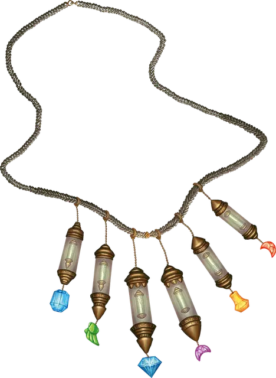

Ожерелье молитвенных чёток
Necklace of Prayer Beads
Чудесный предмет, редкий (требуется настройка друидом, жрецом или паладином)

Рекомендованная стоимость 501-5 000 зм
У этого ожерелья 1к4 + 2 магические бусины, изготовленные из аквамарина, чёрного жемчуга или топаза. На нём также много немагических бусин, изготовленных из янтаря, кровавика, цитрина, коралла, жадеита, жемчуга или кварца. Если магическую бусину снимут с ожерелья, она теряет свою магию.
Существует шесть видов магических бусин. Мастер сам решает вид каждой бусины или определяет их случайным образом. На ожерелье могут быть бусины одного и того же вида. Для того чтобы использовать одну из них, вы должны носить это ожерелье. В каждой бусине находится заклинание, которое вы можете наложить ей бонусным действием (при необходимости используйте свою Сл спасброска). После того как заклинание магической бусины наложено, эту бусину нельзя использовать повторно до следующего рассвета.
| к20 | Бусина... | Заклинание |
| 1-6 | Благословения | Благословение [Bless] |
| 7-12 | Лечения | Лечение ран [cure wounds] (2-й уровень) или малое восстановление [lesser restoration] |
| 13-16 | Благоволения | Высшее восстановление [greater restoration] |
| 17-18 | Кары | Клеймящая кара [branding smite] |
| 19 | Призыва | Планарный союзник [planar ally] |
| 20 | Хождения по ветру | Хождение по ветру [Wind walk] |